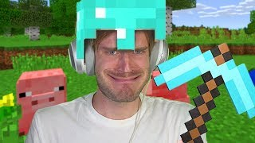
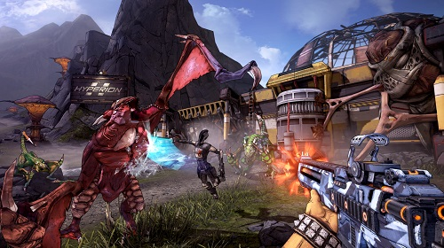
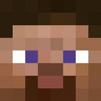
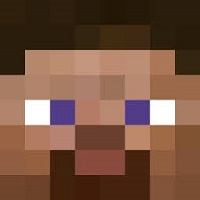

Компьютерные игры
Компьютерная игра — компьютерная программа, служащая для организации игрового процесса (геймплея), связи с партнёрами по игре, или сама выступающая в качестве партнёра. В настоящее время, в ряде случаев, вместо термина компьютерная игра может использоваться видеоигра, то есть данные термины могут употребляться как синонимы и быть взаимозаменяемыми. В компьютерных играх, как правило, игровая ситуация воспроизводится на экране дисплея или обычного телевизора (в этом случае компьютерные игры одновременно являются и видеоиграми).
Жанры компьютерных игр
- ACTION
- ACTION-ADVENTURE
- ПРИКЛЮЧЕНИЯ (КВЕСТЫ)
- РОЛЕВЫЕ ИГРЫ
- СИМУЛЯТОРЫ
- СТРАТЕГИИ
- СПОРТИВНЫЕ ИГРЫ
- ГОЛОВОЛОМКИ
Minecraft
Minecraft (от англ. mine — «шахта; добывать» + craft — «ремесло; создавать») — компьютерная инди-игра в жанре песочницы, созданная шведским программистом Маркусом Перссоном и выпущенная его компанией Mojang AB. Minecraft получила всеобщее признание среди игровой прессы и множество наград. Критики выделили такие основные достоинства, как реиграбельность, минималистичный дизайн, динамичный саундтрек и большая свобода творчества, ограниченная лишь фантазией игрока; недостатками они посчитали наличие недоработанных предметов и сложности с созданием сетевой игры, а также отсутствие в игре режима обучения. Разработчики устранили эти недостатки в последующие годы. На весну 2021 года было продано более 238 миллионов копий на всех платформах, что делает Minecraft самой продаваемой игрой в истории 140 миллионов игроков запускали игру хотя бы раз в месяц. В декабре 2021 года Minecraft стала первой и, на данный момент, единственной видеоигрой, набравшей 1 триллион просмотров на YouTube. В популяризации и коммерческом успехе Minecraft большую роль сыграли пользовательский контент, в том числе видеоролики, распространяемые через YouTube, и множество сторонних модификаций. На сегодняшний день Minecraft представляет собой целую франшизу, включающую в себя, помимо основной игры, такие игры как Minecraft: Story Mode, Minecraft Earth и Minecraft Dungeons.
Stardew Valley
Stardew Valley — компьютерная игра в жанре симулятора жизни фермера с элементами ролевой игры, разработанная игровым дизайнером Эриком Бароном и изданная Chucklefish Games для Microsoft Windows в 2016 году. В начале игры управляемый игроком герой получает в наследство заброшенную ферму в вымышленной долине Стардью. Игра не ставит перед игроком какой-то определенной задачи, но предлагает множество различных занятий: сажать различные растения и ухаживать за ними, разводить скот, заниматься ремеслами, добывать руду, а также участвовать в жизни соседнего городка, зарабатывая игровые деньги для расширения фермы. Stardew Valley создавалась под сильным влиянием серии игр Story of Seasons; единственный разработчик игры Эрик Барон изначально пытался создать программный клон Story of Seasons в качестве упражнения по программированию. Барон потратил на разработку игры около четырёх лет, поддерживая тесную связь с заинтересованными игроками. После выхода Stardew Valley получила положительные отзывы от критиков и в течение нескольких месяцев входила в число самых продаваемых игр в сети Steam. К январю 2020 года было продано более 10 миллионов копий игры на всех платформах.
Borderlands 2
 Borderlands 2 — компьютерная игра в жанре шутера от первого лица с элементами RPG, продолжение компьютерной игры Borderlands (2009). Отличается от своей предшественницы улучшенной системой модинга оружия и более продуманным сюжетом. Игра Borderlands 2 строится на тех же элементах геймплея, что и её предшественница. Это шутер от первого лица, включающий в себя элементы развития персонажей, как в RPG, что позволило Gearbox назвать игру «ролевым шутером». В начале игры игрок может выбрать одного из четырёх персонажей (при наличии дополнений — из шести), каждый из которых обладает уникальным навыком и расположенностью к какому-либо виду оружия. Из геймплея первой части сохранился уникальный, рисованный графический стиль, 3 ветви навыков, модификаторы класса и сетевая игра на четверых игроков. Также переработан искусственный интеллект, создано больше не агрессивных игроку персонажей, которые будут перемещаться по игровому миру, в зависимости от момента прохождения. Вражеский интеллект стал более командным, враги атакуют с флангов, укрываются при ранениях, а также способны взаимодействовать друг с другом (например, лечить товарищей, увеличивать запас щитов на время обороны или использовать самих товарищей как щиты). В зависимости от места попадания выстрела, враги могут быть оглушены или начать хромать. Враги будут преследовать игрока, вскарабкиваясь или пересекая местность со сложным рельефом.
 
